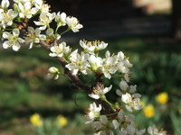

Next Photo
-
Vote
Texture Butterfly
This orange butterfly feels the tree's unique texture as it sits on it's bark. The texture of the tree and orange of the butterfly are the main facets of this photo. The bark's unique, sharp lines contrast the soft fuzzy hairs on the orange butterfly.
More...
ID: 34
Title: Texture Butterfly
Description: This orange butterfly feels the tree's unique texture as it sits on it's bark. The texture of the tree and orange of the butterfly are the main facets of this photo. The bark's unique, sharp lines contrast the soft fuzzy hairs on the orange butterfly.
Keywords: orange butterfly bark sharp lines
Hidden: n
Date added: 2010-09-20 21:32:54 UTC
Date taken: 2006-04-09 15:58:11 UTC
Camera: FUJIFILM.FinePix S5100 .
Resolution: 2272x1704
Mode:
Shutter speed: 830/100
Flash: 16
Exposure time: 10/3200
Iso: 100
Metering: 5
Aperture: 430/100
Focal length: 5130/100
Artist: NathanielGuy Mahieu
Copyright: 2006 NathanielGuy Mahieu
Views: 15627
